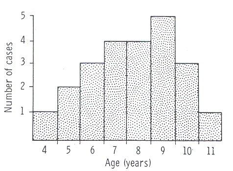

THE CIRCUMCISION REFERENCE LIBRARY
AMK Rickwood, V
Hemalatha, G Batcup and L Spitz
Paediatric Surgical Unit, The Children's Hospital
Sheffield
Summary--Phimosis, defined as scarring of the tip of the prepuce, was studied prospectively in a series of 23 boys aged 4 to 11 years. There was little to support the contention that the condition is caused by trauma, or by ammoniacal or bacterial inflammation of the prepuce, could any other aetiological factor be identified. Histological examination of the foreskin showed the appearances of Balanitis Xerotica Obliterans in 20 of the 21 specimens submitted for study.
The usual reason for referral, and the commonest indication for circumcision, is "phimosis", but experience suggests that this condition is over-diagnosed and many unnecessary circumcisions performed in consequence. True, from its Greek derivation (φιμωσις, muzzling), the term might be applied whenever the foreskin cannot be retracted to reveal the glans penis, but Gairdner (1949) demonstrated that in young boys non-retractability of the foreskin is a normal finding and is due to the persistence of developmental adhesions between glans and prepuce. These break down spontaneously with the passage of time and, without interference, full retractability of the foreskin can be expected in almost all boys by their early teens (Oster, 1968). Non-retractability of this type requires no treatment and the term phimosis is best avoided in this situation since it implies the existence of pathology when there is none. On the other hand, there are cases where the tip of the prepuce loses its normal suppleness and becomes scarred, resulting in secondary non-retractability. The appearances are unmistakable (Fig. 1) and clearly pathological; we confine the term "phimosis" exclusively to cases of this type.
Little is known of this condition. Its aetiology has been variously described to the trauma of forcible retraction (Twistington Higgins et al., 1951), to ammonia dermatitis (Robarts, 1962) or to repeated episodes of bacterial balanoposthitis (Campbell, 1951). Its natural history is unknown and its histological features have not been adequately described. That circumcision is the only possible treatment has never been questioned. In view of this lack of knowledge we elected to study a series of cases in detail.
Patients and Methods
A prospective analysis was made of 23 consecutive new cases of phimosis seen in the first 9 months of 1978. At the initial out-patient attendance full details of the history and physical examinination was entered on a pro forma. All of the patients proceeded to circumcision, where the operative findings were noted, the urine and the bacterial flora of the prepuce cultured, and the operative specimen submitted for histological examination.
Fig. 1 The clinical appearance of
phimosis; the white
"scarring" of the tip of the prepuce is plainly
seen.

Fig. 2 The age of patients at presentation.
Results
Clinical Findings
The Age distribution of the patients is shown in Figure 2.
The mean duration of symptoms was 3.1 months (range 2 days to
14 months. Seven patients complained of poor urinary stream,
6 of dysuria, 4 of irritation or soreness of the prepuce, 2
of non-retractability of the foreskin and one of haematuria,
whilst 3 boys admitted to no symptoms. One boy described a
vesicular eruption on his prepuce at the onset of the
disease, but in the remainder the process began insidiously.
There were no apparent precipitating factors, nor any history
of a change of clothing or washing methods. In 11 patients
the foreskin had previously been fully retractile, in 4
partially retractile and in 4 non-retractile, whilst 4
patients had no recollection of the previous state of
retractability of their foreskin. Five patients gave a past
history of balanoposthitis, one of ammonia dermatitis and 6
of forcible retraction, but in each case the last episode of
any one of these had been separated from the onset of
phimosis by a period of years. All were fully continent by
day and night. Two patients had a skin disease (psoriasis)
and 3 an allergy (2 penicillin, 1 pollen). The fathers of 3
boys had been circumcised for reasons unknown. In a total of
14 brothers over the age of 5 years there were no instances
of phimosis. All of the patients were prepubertal and
physical examinations were unremarkable apart from the
presence of phimosis, which was confined to the tip of the
prepuce and did not extend from more than 0.25 cm
proximally.
Operative Findings
Adhesions between the glans and foreskin were present in 6
cases and retained smegma in 2 cases. The underlying glans
appeared normal except in one patient where there was a
suggestion of involvement of the urethra meatus.
Laboratory Findings
An excess of leucocytes in sterile urine was found in one
patient, but in the remainder the urine was free of bacteria
or other abnormal constituents on routine laboratory testing.
Pathogenic bacteria were cultured from the prepuce in 4
instances (beta haemolytic streptococci 2,
Proteus 2). In other cases culture was either sterile
or produced mixed growths of conventionally non-pathogenic
organisms.
Histological Findings
Twenty-one specimens were submitted for histological
examination, all but one of which showed the features of Balanitis Xerotica
Obliterans (BXO). The histological criteria for this
diagnosis was oedema and homogenisation of collagen in the
upper dermis, inflammatory infiltration of lymphocytes and
histiocytes in the mid-dermis, atrophy of the stratum
malpighi and hydropic degeneration of the basal cells
(Bainbridge et al., 1971; Lever and Schaumburg-Lever, 1975).
A typical example is shown in figure 3. The only atypical
finding was that although the stratum malpighi was atrophic
in some areas, other parts of the epidermis were of normal
width or even acanthotic. A patchy non-specific outer dermal
infiltration of chronic inflammatory cells was often present
in other parts of the prepuce not affected by BXO. The single
specimen not affected by BXO had minimal chronic inflammatory
changes in the outer dermis and marked dilation of the
lymphatic channels near the inner surface of the prepuce. The
foreskins of 11 other boys aged 8 months to 11 years, who had
been circumcised for religious reasons, were also examined
histologically: none showed the changes of BXO.
Fig. 3 Histology of the foreskin
of a 7-year old boy
with phimosis, showing the features of BXO detailed
in the text. (H and E X 120).
Discussion
The findings of a previous survey (Rickwood, 1977) confirm that phimosis in the pathological sense is rarely seen in pre-school boys. Its aetiology remains obscure. Our data do not support previous contentions that it is due to forcible retraction, ammonia dermatitis or recurrent balanoposthitis. There appears to be no familial predisposition or any relation to the changes of puberty, nor is there any evidence of its being a form of contact dermatitis, a local manifestation of general allergy or a reaction to retained smegma. It is not related to the presence or otherwise of preputial adhesions. If a bacterial organism is involved it is not a conventional pathogen. A viral aetiology remains a possibility.
The finding of BXO is almost all cases was unexpected, since this is a condition mainly reported in adults and childhood cases have been thought to be exceptional. (Caterall and Oates, 1962; Schinella and Miranda, 1964; Mikat et al., 1973; McKay et al., 1975). BXO histologically resembles Lichen Sclerosis et Atrophicus, and may affect the prepuce (Bainbridge et al., 1971), the anterior urethra (Staff, 1970) or both simultaneously. Although there are changes in the dermal collagen, there is no evidence that the condition is related to the general collagenoses (Leven and Schaumburg-Lever, 1975), and the notion that is is primarily an inflammatory disease is supported by the lymphocytic and histiocytic infiltration which is especially marked in its early stages (Staff, 1970). If so, however, the nature of the inflammatory agent is unknown.
It has been assumed that acquired phimosis persists or progresses. In this series, where all patients were circumcised within two months of presentation, no changes for better or worse were noted, but at a time when waiting lists were longer a few examples of spontaneous and apparently permanent regression were seen. On the other hand, in adult patients progression of the disease to involve the anterior urethra may occur, and the likelihood of this happening may possible be increased as a result of circumcision (Stuhmer, 1928; Staff, 1970). The literature does not contain any examples of this occurring in childhood.
These considerations have some bearing on the management. Treatment is undoubtedly required, not only for the long-term problems associated with a permanently non-retractile foreskin, but because boys with phimosis are often much troubled with their present symptoms. Although spontaneous regression may occasionally occur, and although the changes of BXO have been reversed by the local application of corticosteroids (Caterall and Oates, 1962; Poynter and Levy, 1967), circumcision is undoubtly the most efficacious treatment and there seems little reason to doubt its safety in the long term.
[CIRP Note: This excellent discussion of phimosis was prepared a quarter-century ago. Since that time the physical, psychological, and sexual complications of circumcision have become better known. In addition, new treatment options have emerged. The conclusions of Rickwood et al as to safety of circumcision must be taken with caution. New effective conservative non-traumatic treatment options for phimosis are now available.]
References
Bainbridge, D. R., Whitaker, R. H., and Shepheard, B. G. F. (1971). Balanitis xerotica obliterans and urinary obstruction. British Journal of Urology, 43, 487-401.
Campbell, M. (1951). Clinical Pediatric Urology. Philadelphia: Saunders.
Caterall, R. D. and Oates, J. K. (1962). Treatment of balanitis xerotica obliterans with hydrocortisone injections. British Journal of Dermatotology and Syphilology, 64 (620-627).
Gairdner, D. (1949). The fate of the foreskin. British Medical Journal, 2, 1433-1437.
Lever, W. F. and Shaumburg-Lever, G. (1975). Histopathology of the Skin, Philadelphia: Lippincott.
McKay, D. L. Fuqua, F. and Weinberg, A. G. (1975). Balanitis xerotica obliterans in children. Journal of Urology, 114, 773-775.
Mikat, D. M., Ackerman, H. R. and Mikat, K. W. (1973). Balanitis xerotica obliterans: report of a case in an 11 year old and a review of the literature. Pediatrics, 52, 42-47.
Oster, J. (1968). The further fate of the foreskin. Archives of Disease in Childhood, 43, 41-47.
Poynter, J. H. and Levy, J. (1967) Balanitis xerotica obliterans: effective treatment with corticosteroroids. British Journal of Urology, 39, 420-425.
Rickwood, A. M. K. (1977). A study of 147 boys referred for circumcision. (Unpublished data.)
Robarts, F. H. (1962). Penis and prepuce. In Surgery of Childhood, ed. Mason Brown, J. J. Chapter 39, pp. 1159-1181. London: Edward Arnold.
Schinella, R. A. and Miranda, D. (1974). Posthitis xerotica obliterans in circumcision specimens. Urology, 3, 348-350.
Staff, W. G. (1970) Urethral involvement in balanitis xerotica obliterans. British Journal of Urology, 47, 234-339.
Stuhmer, A. (1928). Balanitis xerotica obliterans (post-operationem) und irhe Beziehunger zur "Kraurosis glandis et preputia penis" Archiv fur Dermatologie und Syphilis, 156, 613-623.
Twistington Higgins, T., Williams, D. I. and Ellison Nash, D. F. (1951). The Urology of Childhood. London: Butterworths.
The Authors
A. M. K. Rickwood, FRCS, Senior Surgical Registrar.
V. Hemalatha, FRCSE, Registrar.
G. Batcup, MRCS, MRCPath, Senior Registrar, Department of
Histopathology.
L. Spitz, FRCSE, Consultant Paediatric Surgeon.
Requests for reprints to: A. M. K. Rickwood, Paediatric
Surgical Unit,
The
Children's Hospital, Western Bank, Sheffield S10 2TH.
http://www.cirp.org/library/treatment/phimosis/rickwood/